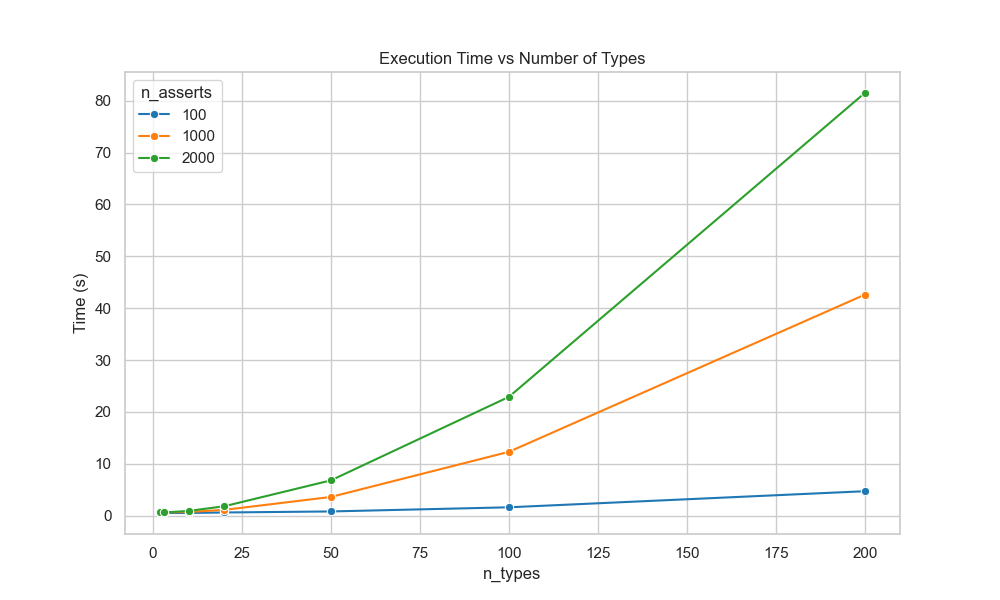

⇦
⇦
2026-04-01
mypy
Tested with mypy 1.19.1 on a 2025 MacBook Air.
Large unions can be slow to typecheck with mypy - here's some data to help with your intuition.
The code we're going to typecheck has n_types types in a union All, then for n_calls we're going to typecheck a.f(b)
class Foo0:
def f(self, _: All) -> All:
return self
class Foo1:
def f(self, _: All) -> All:
return self
# etc. up to `n_types`
All = Foo0 | Foo1 # etc.
a: All = Foo0()
b: All = Foo0()
a.f(b)
a.f(b)
# etc. up to `n_calls`
We run time how long it takes to run:
mypy test.py --no-incremental
The amount of time taken looks to scale linearly with n_calls and quadratically with n_types.
This is as expected, but the blowup comes pretty quickly, it takes 12s to typecheck 1000 method calls to an 100 wide union.
| n_types | n_calls | time (s) |
|---|---|---|
| 20 | 100 | 0 |
| 50 | 100 | 0 |
| 100 | 100 | 1 |
| 200 | 100 | 4 |
| 20 | 1000 | 1 |
| 50 | 1000 | 3 |
| 100 | 1000 | 12 |
| 200 | 1000 | 42 |

Depending on the structure of your codebase, the "solution" here (although it may involve a fairly hefty refactor) is to wrap the union type like:
@dataclass
class Wrapped:
data: All
# For frequently used methods
def f(self, x: Wrapped) -> Wrapped:
return Wrapped(self.data.f(x.data))
The assumption here is that you spend more time just passing around the big union type than doing anything with its internal data - you only want to implement each .f() if you call it a lot.
Typechecking Wrapped is near instantaneous for all the values of n_types, n_calls that we tested above.
a: Wrapped = Wrapped(Foo0())
b: Wrapped = Wrapped(Foo0())
a.f(b)
# etc. up to `n_calls`
I get that it's tricky, but it bugs me that mypy isn't doing any smarter caching here, the set of signatures All.f = { typeof(Foo.f) for Foo in All } is just { Callable[[All], All] }. My intuition is that a lot of the speedup ty is getting will be due to algorithmic improvements like this as opposed to the move to Rust. This is an unfair comparison as mypy has had to evolve from a very different typing landscape. But also, the mypy codebase is a big mess.